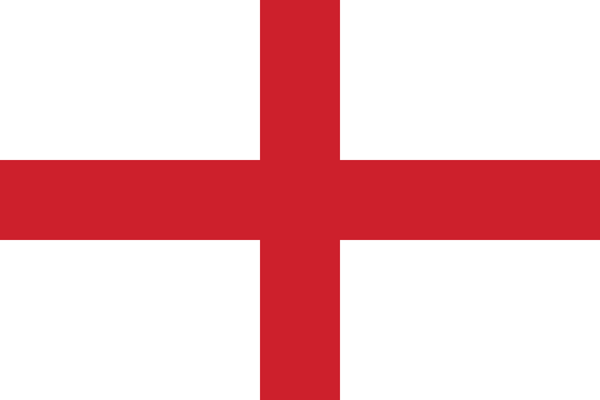

These are the biggest candidates for winning the world cup Qatar 2022
| The Portuguese team is considered as one of the best teams in the world especially they joined the competition with the best generation in their history. Also having the legend Cristiano Ronaldo for the last time as a player in the world cup will be a great motivation to achieve the trophy for the first time in thei history. |
|
The English team is doing very well since their first match in the world cup. They havn`t lost any match yet and playing with a steady level. The English team has many young players with great athletic power. So..Is it coming home this time? |  |
| The French team is the last trophy winner and they came to Qatar wanting to keep the world cup in France. Despite the injuries that striked the team before and during the competition, France is still doing very well in their matches. They are a hard oponnent for any other team. |
|
The Brazillian team is always considered as an candidate to win the world cup trophy as they are the most contry has won the competition with a score of five times. With many young talents and their captin Neymar, they are trying to win the cup for the sixth time in their history. |
|
| Netherland have the record of reaching the final of the cup then not winning it. Can they reach the final and beat the bad luck in this world cup? With an limited generation their chances are very low but the name of Netherland and with their coach Louis Van Gaal they still has a chance. |
|
Argentina has a great history in the world cup thanks to their legeng Diego Maradona, but these days the Argentinian team is not powerful any more. All their chances are between the legs of Lionel Messi the most Baloon D`oor winner. In his last world cup in his career he is trying to achieve the trophy with the help of young players whom are seeking for honouring Messi with the World cup. |
|